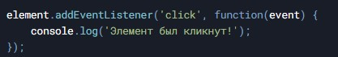
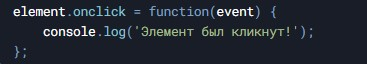
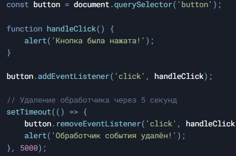
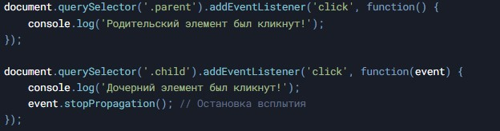
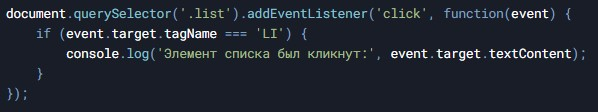

Введение
Обработка событий — это один из ключевых аспектов взаимодействия пользователя с веб-страницей. События могут быть вызваны различными действиями, такими как клики мышью, нажатия клавиш, загрузка страницы и т.д. JavaScript предоставляет мощные инструменты для обработки этих событий, что позволяет создавать интерактивные и динамические веб-приложения.
Основные понятия
-
Событие (Event) - это действие или происшествие, которое происходит в браузере, например, клик мыши, нажатие клавиши, загрузка страницы и т.д.
-
Обработчик события (Event Handler) - это функция, которая вызывается в ответ на возникновение события.
-
Всплытие событий (Event Bubbling) - это процесс, при котором событие сначала обрабатывается на целевом элементе, а затем последовательно на всех его родительских элементах.
-
Погружение событий (Event Capturing) -это процесс, при котором событие сначала обрабатывается на самом верхнем элементе в иерархии DOM, а затем последовательно на всех дочерних элементах, пока не достигнет целевого элемента.
-
Делегирование событий (Event Delegation) - это техника, при которой обработчик события добавляется к родительскому элементу, а не к каждому дочернему элементу. Это позволяет обрабатывать события на динамически добавляемых элементах.
Методы обработки событий
addEventListener - это рекомендуемый метод для добавления обработчиков событий. Он позволяет добавлять несколько обработчиков на одно событие и имеет гибкие настройки.
onclick - это свойство, которое позволяет назначить обработчик события напрямую. Однако, оно менее гибкое, так как позволяет назначить только один обработчик.
removeEventListener - метод для удаления обработчика события, добавленного через addEventListener .
Примеры кода
- Пример использования addEventListener и removeEventListener: 
- Пример всплытия событий: 
- Пример делегирования событий: 
Заключение
Обработка событий в JavaScript — это мощный инструмент для создания интерактивных веб-приложений. Понимание таких концепций, как всплытие, погружение и делегирование событий, позволяет эффективно управлять поведением элементов на странице. Использование методов addEventListener и removeEventListener обеспечивает гибкость и контроль над обработкой событий.